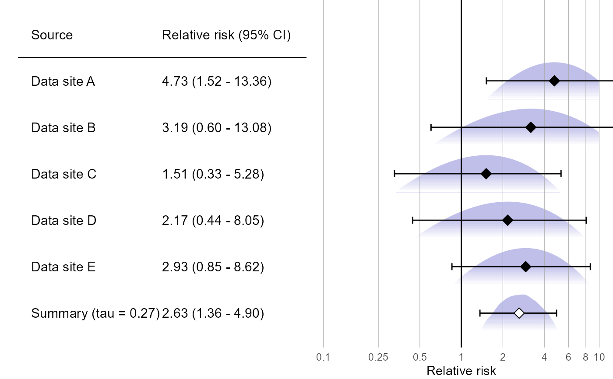

Creates a forest plot of effect size estimates, including the summary estimate.
plotMetaAnalysisForest(
data,
labels,
estimate,
xLabel = "Relative risk",
summaryLabel = "Summary",
limits = c(0.1, 10),
alpha = 0.05,
showLikelihood = TRUE,
fileName = NULL
)Arguments
- data
A data frame containing either normal, skew-normal, custom parametric, or grid likelihood data. One row per database.
- labels
A vector of labels for the data sources.
- estimate
The meta-analytic estimate as created using either ['computeFixedEffectMetaAnalysis()
] or [computeBayesianMetaAnalysis()`] function.- xLabel
The label on the x-axis: the name of the effect estimate.
- summaryLabel
The label for the meta-analytic estimate.
- limits
The limits of the effect size axis.
- alpha
The alpha (expected type I error).
- showLikelihood
Show the likelihood curve for each estimate?
- fileName
Name of the file where the plot should be saved, for example 'plot.png'. See the function ggplot2::ggsave ifor supported file formats.
Value
A Ggplot object. Use the ggplot2::ggsave function to save to file.
Details
Creates a forest plot of effect size estimates, including a meta-analysis estimate.
Examples
# Simulate some data for this example:
populations <- simulatePopulations()
labels <- paste("Data site", LETTERS[1:length(populations)])
# Fit a Cox regression at each data site, and approximate likelihood function:
fitModelInDatabase <- function(population) {
cyclopsData <- Cyclops::createCyclopsData(Surv(time, y) ~ x + strata(stratumId),
data = population,
modelType = "cox")
cyclopsFit <- Cyclops::fitCyclopsModel(cyclopsData)
approximation <- approximateLikelihood(cyclopsFit, parameter = "x", approximation = "custom")
return(approximation)
}
approximations <- lapply(populations, fitModelInDatabase)
approximations <- do.call("rbind", approximations)
# At study coordinating center, perform meta-analysis using per-site approximations:
estimate <- computeBayesianMetaAnalysis(approximations)
#> Detected data following custom parameric distribution
#> Performing MCMC. This may take a while
plotMetaAnalysisForest(approximations, labels, estimate)

# (Estimates in this example will vary due to the random simulation)